CS 180 · Project 4A
Image Warping and Mosaicing
For this project, I built the main pieces of a panorama stitcher myself. I started with point correspondences, solved for projective homographies with least squares, and wrote inverse warping with both nearest-neighbor and bilinear interpolation. I then used the same code to rectify flat objects and blend three sets of photos into mosaics.
I think the most interesting part was seeing how one 3×3 matrix can either flatten a poster or line up two views of a whole scene.
Part A.1Shooting the pictures
I took each set from one spot and rotated the camera between shots, so the center of projection stayed as fixed as I could keep it. I also left a lot of overlap between neighboring views. The first set looks north from Etcheverry Hall, the second follows a long hallway, and the third looks south from Etcheverry Hall. All three have strong edges and details that made it easier to pick reliable correspondences.
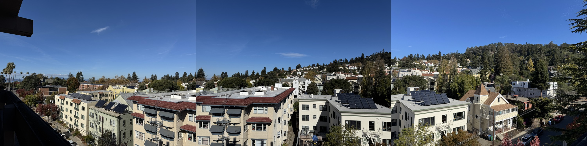
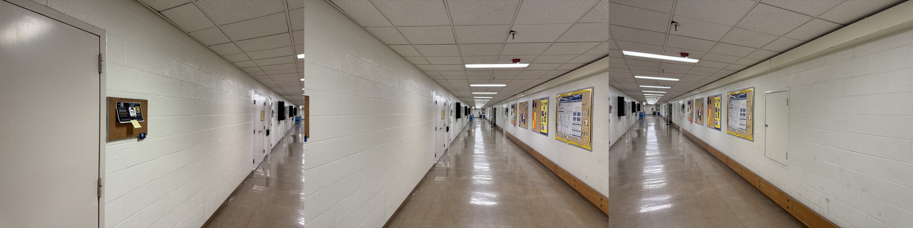
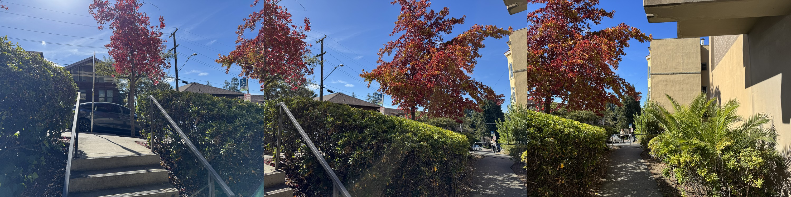
Part A.2Recovering homographies
I used matplotlib.ginput to click matching points in the two images in the
same order. Running python3 proj4.py select opens the picker and saves those
clicks, so I can reproduce the mosaics without putting coordinate lists in the source.
I used 11 or 12 correspondences for each pair instead of the minimum four because the
overdetermined system is less sensitive to a slightly imperfect click.
A homography maps a 2D point in one image to the matching point in another image. I write the points in homogeneous coordinates as
p = [x, y, 1]T, p' = [u, v, 1]T, p' ∼ Hp
The ∼ symbol means the two homogeneous vectors can differ by a nonzero scale. If I
expand the matrix multiplication, the unknown scale is the third coordinate of
Hp:
s[u, v, 1]T = [h11x + h12y + h13, h21x + h22y + h23, h31x + h32y + h33]T
u =
h11x + h12y + h13
h31x + h32y + h33
v =
h21x + h22y + h23
h31x + h32y + h33
A homography is unchanged if every entry is multiplied by the same scale, so it has
eight independent unknowns instead of nine. I fix the scale by setting
h33 = 1 and collect the other entries into
h = [h11, h12, h13, h21, h22, h23, h31, h32]T.
Multiplying through by each denominator turns the two rational equations into two
equations that are linear in h:
xh11 + yh12 + h13
- ux h31 - uy h32 = u
xh21 + yh22 + h23
- vx h31 - vy h32 = v
That gives the following two rows for one correspondence
(x, y) → (u, v):
[x y 1 0 0 0 -ux -uy]h = u
[0 0 0 x y 1 -vx -vy]h = v
With n correspondences, stacking these rows gives a
2n × 8 matrix A and a 2n-entry vector
b. Four point pairs give exactly eight equations, but any click error can
move the answer a lot. With more than four pairs, I solve the overdetermined system by
minimizing the total squared equation error:
h* = arg minh ||Ah - b||22 and therefore ATAh* = ATb
I use np.linalg.lstsq instead of explicitly computing the inverse of
ATA. After solving, I append h33 = 1 and reshape the
nine values into H. I also spread the clicked points around the overlap;
points that are all clustered together or nearly collinear make the system poorly
conditioned. I did not use cv2.findHomography or another homography helper.
def computeH(im1_pts, im2_pts):
a = []
b = []
for (x, y), (u, v) in zip(im1_pts, im2_pts):
a.append([x, y, 1, 0, 0, 0, -u * x, -u * y])
b.append(u)
a.append([0, 0, 0, x, y, 1, -v * x, -v * y])
b.append(v)
h = np.linalg.lstsq(np.array(a), np.array(b), rcond=None)[0]
return np.append(h, 1).reshape(3, 3)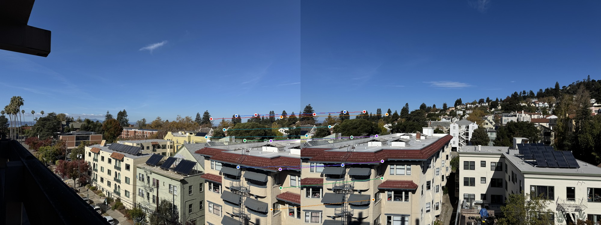
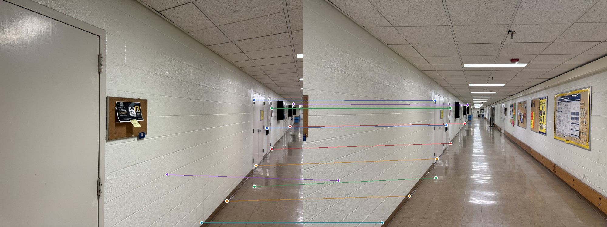
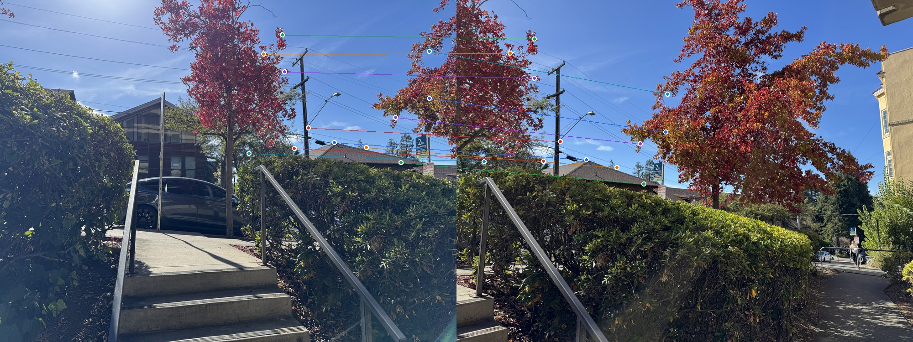
Recovered matrices
These examples map each left image into its middle image:
Etcheverry Hall North
[[ 5.074484 -0.296737 -3268.809037]
[ 1.614043 4.244451 -1355.234272]
[ 0.004050 -0.000076 1.000000]]
Hallway
[[ 2.751649 0.008088 -1304.756127]
[ 0.578830 2.059868 -396.432351]
[ 0.001570 -0.000004 1.000000]]
Etcheverry Hall South
[[ 3.299640 -0.144971 -1614.289351]
[ 1.111576 2.525038 -670.461626]
[ 0.002356 -0.000203 1.000000]]Part A.3Warping and rectification
I used inverse warping so every destination pixel gets a value. For each output point
(p'), I compute (p=H^{-1}p'), divide by its homogeneous coordinate, and sample the
source image at that location. My nearest-neighbor version rounds to the closest pixel.
My bilinear version takes the four surrounding pixels and weights them by the horizontal
and vertical distances. Both interpolators are written directly with NumPy; I did not
use cv2.warpPerspective, skimage.transform.warp, or an
interpolation helper.
Before making mosaics, I tested the warp by clicking four corners of two known rectangles and mapping them to upright rectangles. This made mistakes in point order or homography direction very obvious.
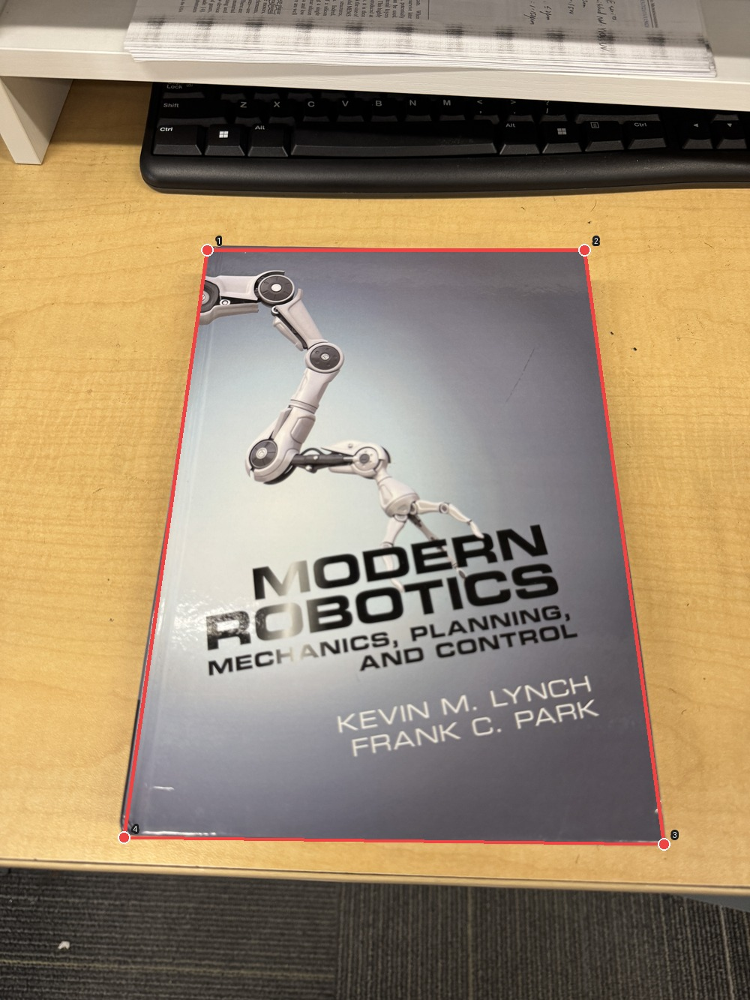
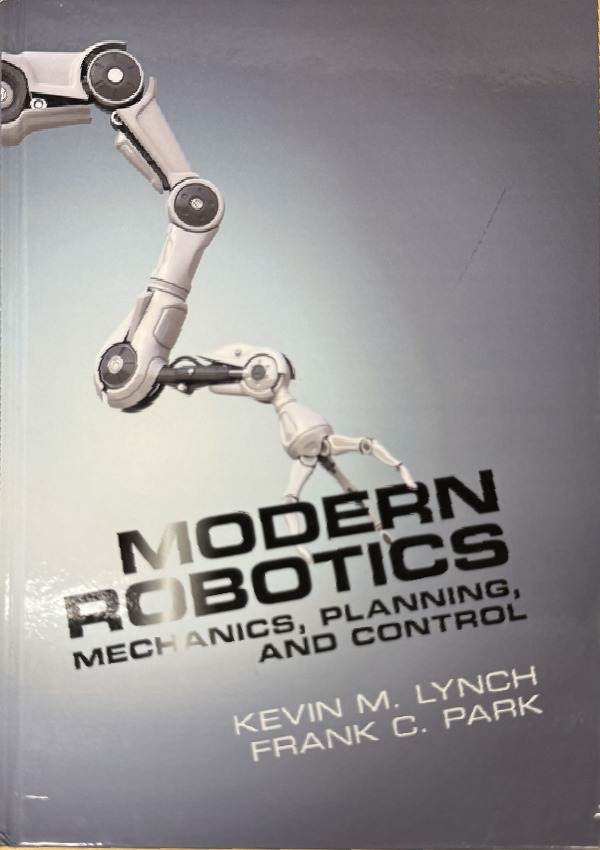
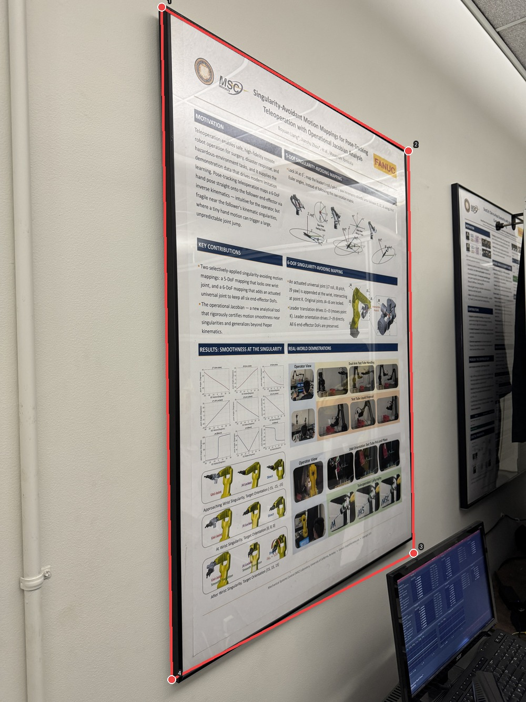
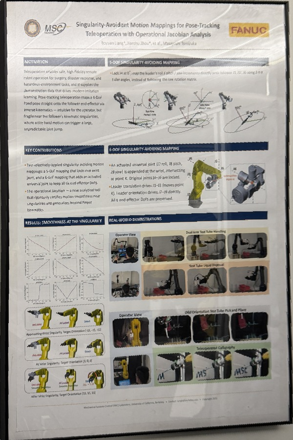
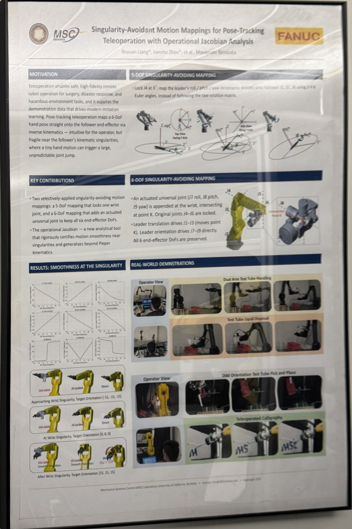
Nearest neighbor vs. bilinear
Nearest neighbor is simpler and about four times faster in my test, but diagonal lines and small letters look blockier. Bilinear interpolation takes four samples and does more arithmetic, so it is slower, but I think the smoother text and edges are worth it for the final mosaics. The close-ups below use the same poster region and output scale.
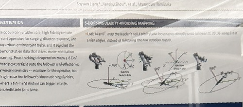
| Method | Time | Samples per output pixel |
|---|---|---|
| Nearest neighbor | 0.047 s | 1 |
| Bilinear | 0.201 s | 4 |
Part A.4Blending mosaics
For each set, I kept the middle photo fixed and warped the left and right photos into its coordinate system with bilinear interpolation. I transformed every image corner first to find one canvas large enough for the full result. A valid-pixel mask travels with each warp.
I did not let one image simply overwrite another. I ran a distance transform on each mask, so a pixel gets a larger weight near the middle of its image and a smaller weight near an edge. In overlapping regions I divide the weighted RGB sum by the total weight. This feathering softens the seams even when exposure changes slightly between shots. The remaining stretching near the outer edges comes from using one planar projection over a wide field of view.
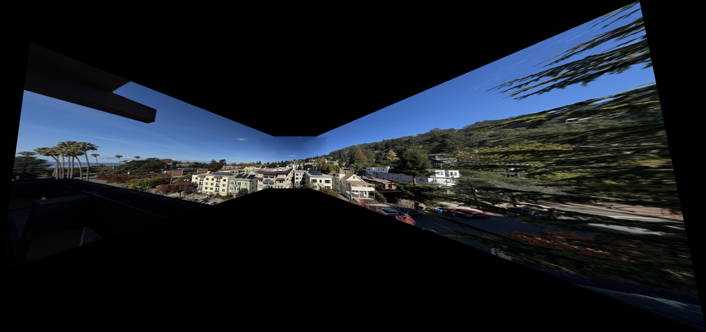
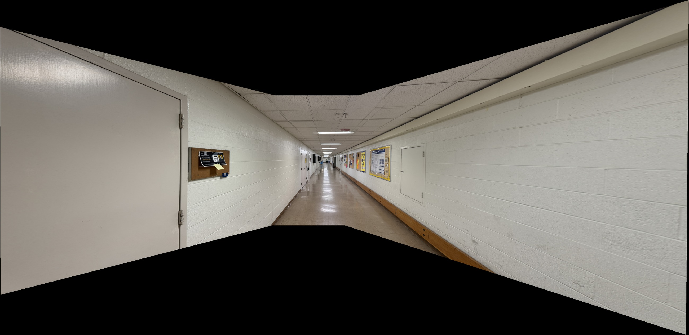
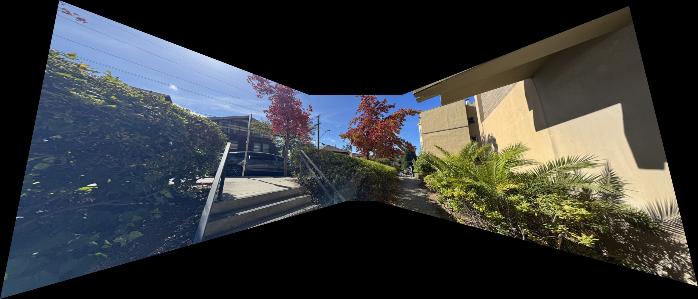
Part A.5 · OptionalBells & Whistles: Cylindrical projection
This part is optional for CS 180. The planar Etcheverry Hall North mosaic stretches the two side images because one flat projection has to represent a very wide field of view. For this bells-and-whistles extension, I projected each photograph onto a cylinder before aligning it. A cylinder lets horizontal camera rotation behave approximately like a translation, so the buildings and trees keep much more natural proportions.
For a source point (x, y), image center (cx, cy),
and focal length f, my forward cylindrical coordinates are
Forward mapping from a flat image onto the cylindrical surface.
I used f = 700 pixels. To avoid holes and unnecessary resampling, I used the
inverse equations for every pixel in the final panorama and sampled directly from the
original photographs with my bilinear interpolator:
Inverse mapping used to sample the original image without holes.
I also mapped the saved correspondences into cylindrical coordinates. Neighboring cylindrical images should differ mostly by translation, so I used the median horizontal and vertical displacement between their matching points. Finally, I applied the same distance-based feathering as Part A.4 and cropped to the largest fully covered rectangle.
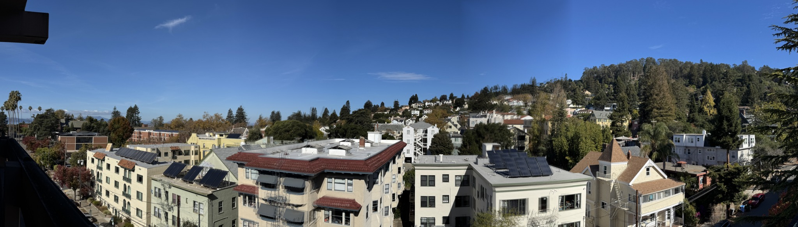